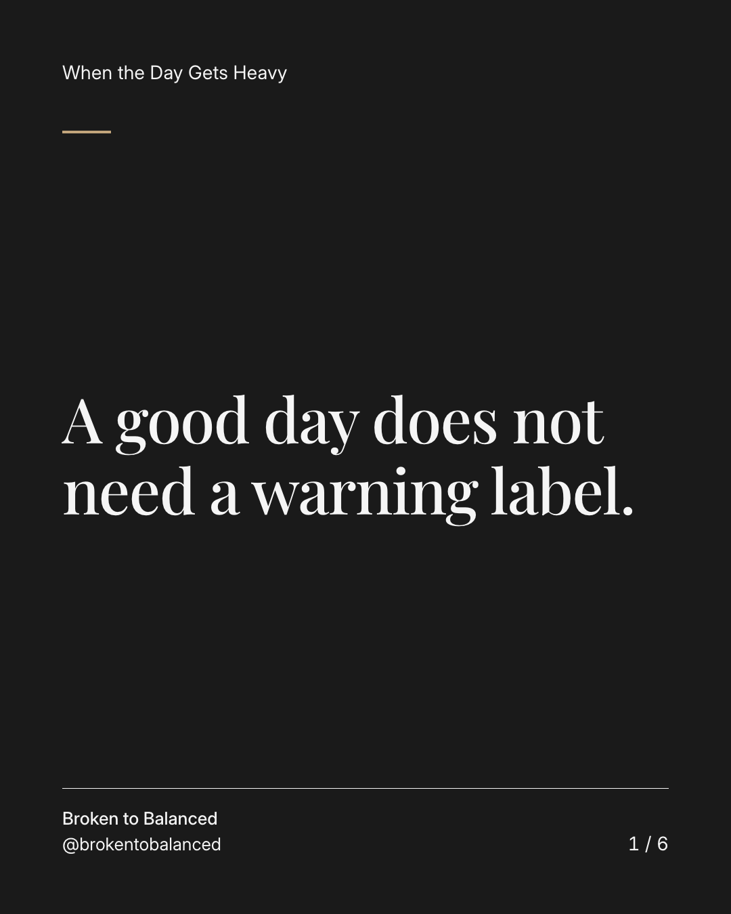
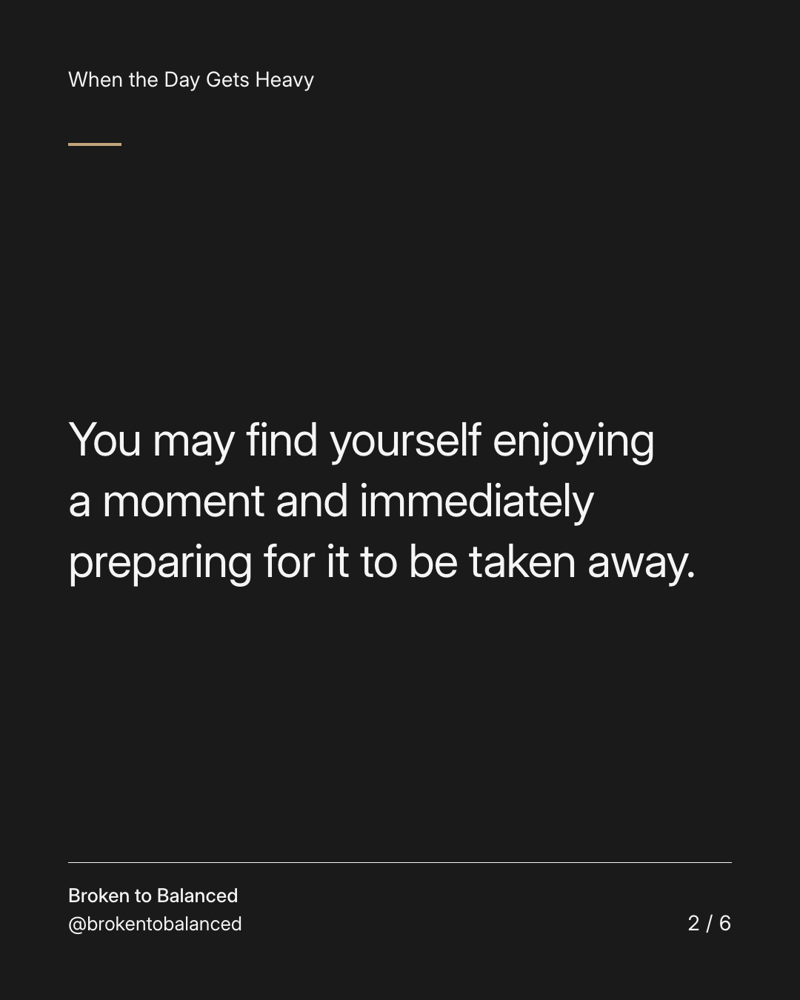
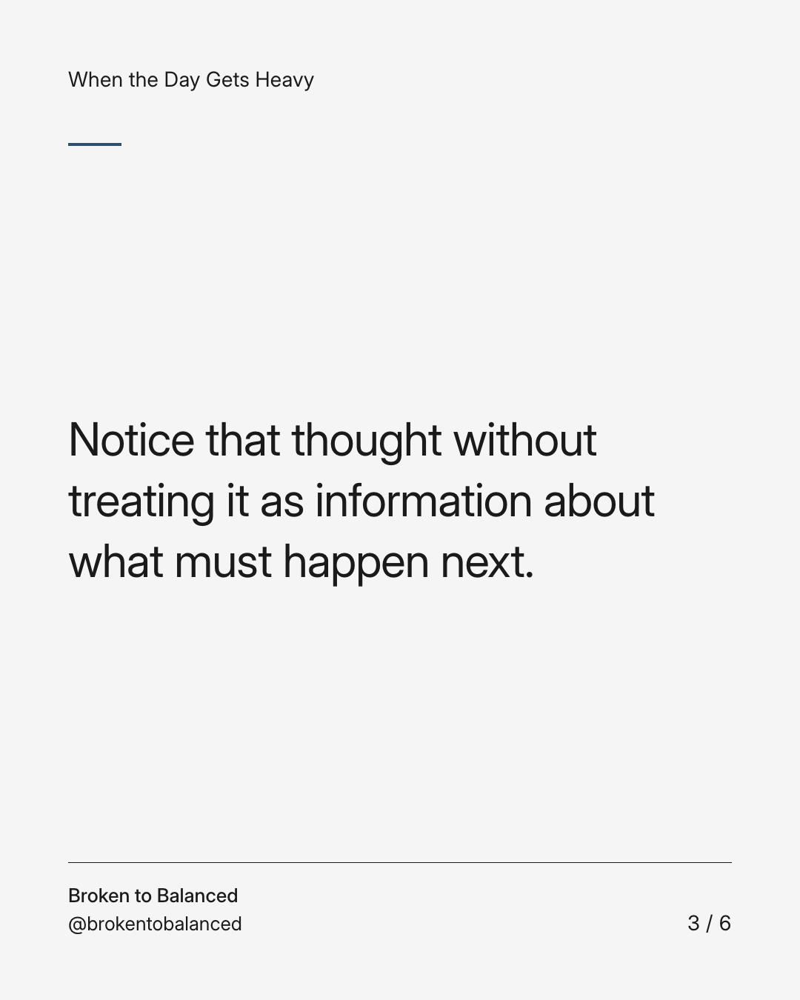
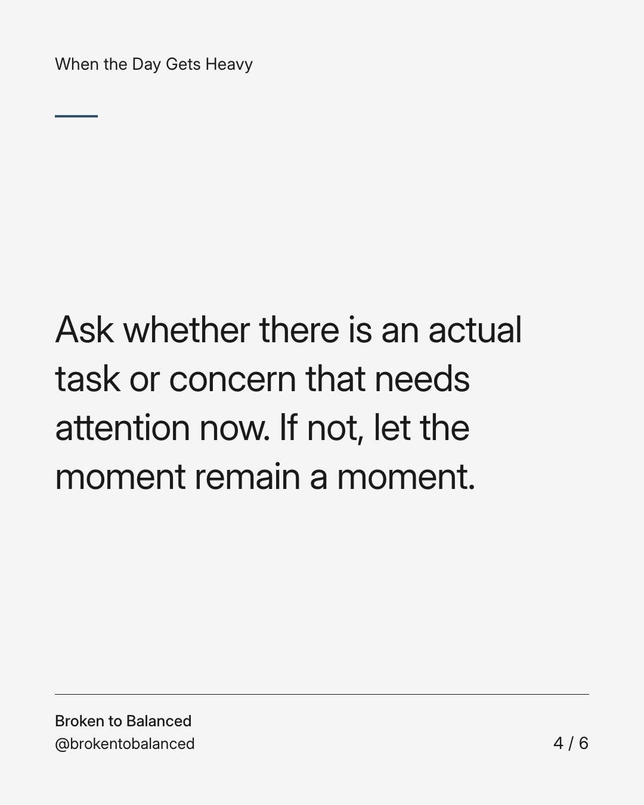
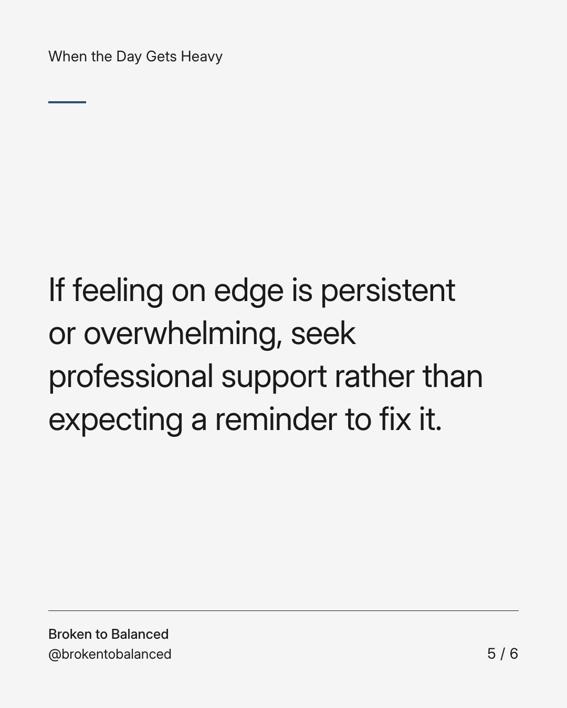
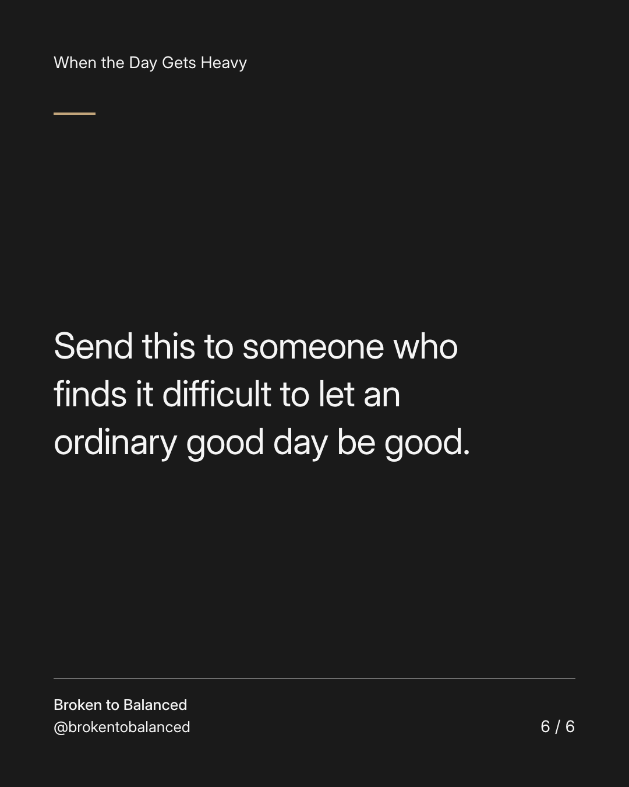

Exact text and accessibility text
A good day does not need a warning label.
Slide 1 of 6. A good day does not need a warning label.


Exact text and accessibility text
You may find yourself enjoying a moment and immediately preparing for it to be taken away.
Slide 2 of 6. You may find yourself enjoying a moment and immediately preparing for it to be taken away.


Exact text and accessibility text
Notice that thought without treating it as information about what must happen next.
Slide 3 of 6. Notice that thought without treating it as information about what must happen next.


Exact text and accessibility text
Ask whether there is an actual task or concern that needs attention now. If not, let the moment remain a moment.
Slide 4 of 6. Ask whether there is an actual task or concern that needs attention now. If not, let the moment remain a moment.


Exact text and accessibility text
If feeling on edge is persistent or overwhelming, seek professional support rather than expecting a reminder to fix it.
Slide 5 of 6. If feeling on edge is persistent or overwhelming, seek professional support rather than expecting a reminder to fix it.


Exact text and accessibility text
Send this to someone who finds it difficult to let an ordinary good day be good.
Slide 6 of 6. Send this to someone who finds it difficult to let an ordinary good day be good.
Exact caption
Plain-text fallback: select and copy the caption.